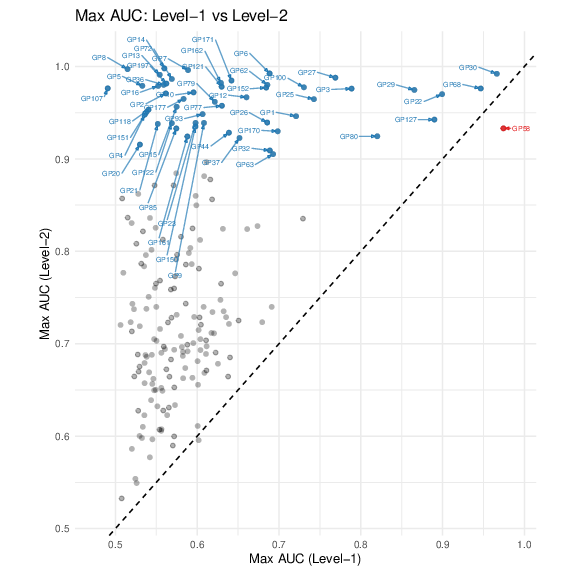
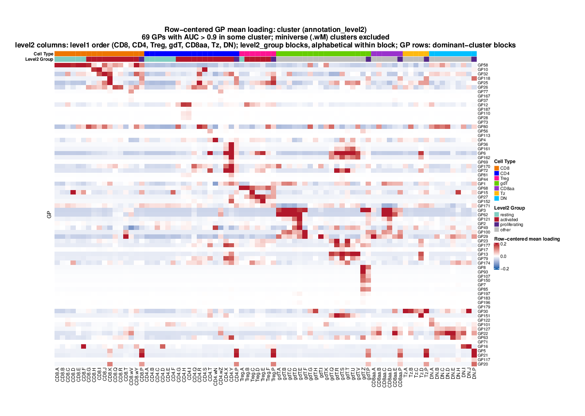
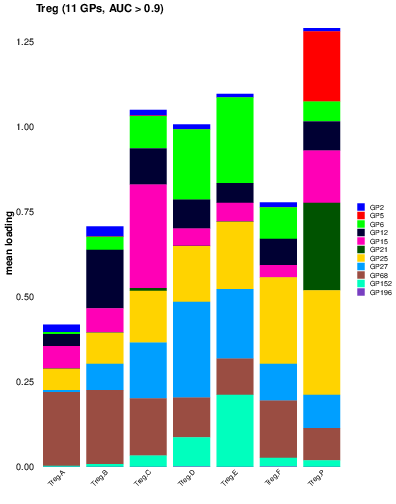
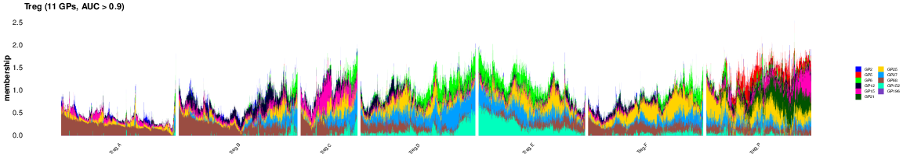

Last updated: 2026-07-30
Checks: 7 0
Knit directory:
immgenT-GP-analysis/analysis/
This reproducible R Markdown analysis was created with workflowr (version 1.7.2). The Checks tab describes the reproducibility checks that were applied when the results were created. The Past versions tab lists the development history.
Great! Since the R Markdown file has been committed to the Git repository, you know the exact version of the code that produced these results.
Great job! The global environment was empty. Objects defined in the global environment can affect the analysis in your R Markdown file in unknown ways. For reproduciblity it’s best to always run the code in an empty environment.
The command set.seed(1) was run prior to running the
code in the R Markdown file. Setting a seed ensures that any results
that rely on randomness, e.g. subsampling or permutations, are
reproducible.
Great job! Recording the operating system, R version, and package versions is critical for reproducibility.
Nice! There were no cached chunks for this analysis, so you can be confident that you successfully produced the results during this run.
Great job! Using relative paths to the files within your workflowr project makes it easier to run your code on other machines.
Great! You are using Git for version control. Tracking code development and connecting the code version to the results is critical for reproducibility.
The results in this page were generated with repository version c9b020f. See the Past versions tab to see a history of the changes made to the R Markdown and HTML files.
Note that you need to be careful to ensure that all relevant files for
the analysis have been committed to Git prior to generating the results
(you can use wflow_publish or
wflow_git_commit). workflowr only checks the R Markdown
file, but you know if there are other scripts or data files that it
depends on. Below is the status of the Git repository when the results
were generated:
Ignored files:
Ignored: .DS_Store
Ignored: .claude/
Ignored: analysis/.DS_Store
Ignored: analysis/.Rhistory
Ignored: analysis/assets/.DS_Store
Ignored: captions/
Ignored: code/.DS_Store
Ignored: code/other/topic_flashier_20250212.R
Ignored: code/other/topic_wrapper_20250215_alldata_backfit.sh
Ignored: data
Ignored: experiments/
Ignored: figures/.DS_Store
Ignored: figures/Previous/.DS_Store
Ignored: figures/Previous/bits/.DS_Store
Ignored: figures/Previous/bits/Figure 1/.DS_Store
Ignored: figures/Previous/bits/Figure 2/.DS_Store
Ignored: figures/Previous/bits/Figure 3/.DS_Store
Ignored: figures/Previous/bits/Figure 4/.DS_Store
Ignored: figures/Previous/bits/Figure 6/.DS_Store
Ignored: figures/Previous/bits/Figure 7/.DS_Store
Ignored: figures/Previous/bits/Figure S1/.DS_Store
Ignored: figures/Previous/bits/Figure S2/.DS_Store
Ignored: figures/Previous/bits/Figure S3/.DS_Store
Ignored: figures/Previous/bits/Figure S6/.DS_Store
Ignored: figures/Previous/bits/Figure S7/.DS_Store
Ignored: figures/final-selected/.DS_Store
Ignored: figures/final-selected/Figure 1/.DS_Store
Ignored: figures/final-selected/Figure 2/.DS_Store
Ignored: figures/final-selected/Figure 4/.DS_Store
Ignored: figures/final-selected/Figure S4/.DS_Store
Ignored: figures/templates_20260729/
Ignored: log/
Ignored: output/Figure2/
Ignored: output/Figure7b/7b_cell_metadata.csv.gz
Ignored: plan/
Ignored: tables/
Ignored: tmp/
Note that any generated files, e.g. HTML, png, CSS, etc., are not included in this status report because it is ok for generated content to have uncommitted changes.
These are the previous versions of the repository in which changes were
made to the R Markdown (analysis/Figure4.Rmd) and HTML
(docs/Figure4.html) files. If you’ve configured a remote
Git repository (see ?wflow_git_remote), click on the
hyperlinks in the table below to view the files as they were in that
past version.
| File | Version | Author | Date | Message |
|---|---|---|---|---|
| html | 62e6e83 | Ziang Zhang | 2026-07-29 | Build site: Figure 4 without the TF-GP network |
| Rmd | 77f3337 | Ziang Zhang | 2026-07-29 | Drop Figure 4’s TF-GP network; re-letter 4d/4e to 4c/4d |
| html | ae21d37 | Ziang Zhang | 2026-07-28 | Build site: republish after the reorder commits |
| html | d538aa2 | Ziang Zhang | 2026-07-28 | Build site: reordered Figures 6 / S6 / S3 and the new Figure 7b page |
| html | 029b0ae | Ziang Zhang | 2026-07-28 | Build site. |
| Rmd | 0f5b5da | Ziang Zhang | 2026-07-28 | Align all figure captions with captions_20260728_final.docx |
| html | 3fc3789 | Ziang Zhang | 2026-07-27 | Republish all 24 pages |
| html | 1390a03 | Ziang Zhang | 2026-07-27 | Republish all 24 pages |
| html | adaef21 | Ziang Zhang | 2026-07-27 | Build site: panel fixes and PDF-derived assets |
| html | 5b19858 | Ziang Zhang | 2026-07-27 | Build site. |
| Rmd | 91ee059 | Ziang Zhang | 2026-07-26 | Select each panel’s code block by name, not by line number |
| html | 91ee059 | Ziang Zhang | 2026-07-26 | Select each panel’s code block by name, not by line number |
| Rmd | 620afca | Ziang Zhang | 2026-07-24 | Align Fig3/4/5 section titles with current numbers; reletter Fig4 to a-e |
| html | 620afca | Ziang Zhang | 2026-07-24 | Align Fig3/4/5 section titles with current numbers; reletter Fig4 to a-e |
| Rmd | 2873ad2 | Ziang Zhang | 2026-07-16 | Unify Fig 3/4/5 panel filenames with new figure numbers |
| html | 2873ad2 | Ziang Zhang | 2026-07-16 | Unify Fig 3/4/5 panel filenames with new figure numbers |
| Rmd | b197499 | Ziang Zhang | 2026-07-16 | Restructure main figures (renumber + split Figure 1) |
| html | b197499 | Ziang Zhang | 2026-07-16 | Restructure main figures (renumber + split Figure 1) |
| html | 6d1c6c0 | Ziang Zhang | 2026-07-04 | Fix TableS1 to use non-thymocyte (not healthy-restricted) AUC, matching published Table S1 |
| html | 92021bf | Ziang Zhang | 2026-07-02 | Build site. |
| html | 827c89b | Ziang Zhang | 2026-07-02 | Build site. |
| Rmd | 8ac7f9f | Ziang Zhang | 2026-07-02 | Add data provenance notes to each script; remove conversational |
| Rmd | f9db962 | Ziang Zhang | 2026-07-02 | Simplify layout: drop old code/script folders, rename |
| html | c6e5086 | Ziang Zhang | 2026-07-02 | Build site. |
| html | 5a79883 | Ziang Zhang | 2026-07-02 | Build site. |
| Rmd | 2b0e445 | Ziang Zhang | 2026-07-02 | Fix GitHub source links to point at the new |
| html | cf1d0ac | Ziang Zhang | 2026-07-02 | Build site. |
| Rmd | 06b2461 | Ziang Zhang | 2026-07-02 | Initial commit: immgenT-GP-analysis |
| html | 06b2461 | Ziang Zhang | 2026-07-02 | Initial commit: immgenT-GP-analysis |
All panels are produced by script/Figure4.R,
which shares its curated GP set with Figure
S3 via code/R/activation_shared_setup.R. The code below
is shown for reference (not re-executed on this page); the images are
its pre-rendered output.
A panel was dropped on 2026-07-29. The bipartite TF-GP network for the 25 curated activation GPs is no longer part of the figure, and the two heatmaps that followed it each moved up a letter: the published 3f and 3g are now (4c) and (4d). The figure is a-d. A TF-GP network for the lineage-defining TFs Gata3, Rorc and Tbx21 is still shown as Fig. S3g.
Data loading, shared across all panels below.
# Figure 4. GPs associated with T-cell activation.
#
# Panels produced. NOTE the renumbering: this figure's published counterpart is
# figures/Previous/bits/Figure *3*, panels 3c-3g (the old 3a/3b moved to
# Figure S3). Full caption text:
# ../immgen-t-factors/figures/Figure_Activation/Figure3_caption.md.
# 4a Standardized mean difference (d) in GP loading, activated vs resting,
# CD4 (x) vs CD8 (y); curated GPs colored by semantic group and labeled.
# 4b GP-gene signature network: each curated GP linked to its top 5
# positively/negatively regulated genes.
# 4c Heatmap of log2FC in mean GP loading across experimental conditions,
# for activated CD4/CD8 cells.
# 4d Heatmap of mean GP loading per Level-2 sub-lineage, across the 7
# T-cell lineages.
#
# Re-lettered 2026-07-29: the bipartite TF-GP network for the curated activation
# GPs was dropped from the figure, and the two heatmaps after it each moved up a
# letter. So against figures/Previous/bits/Figure 3: 4a = 3c, 4b = 3d,
# 4c = 3f, 4d = 3g, and the published 3e has no counterpart here any more. The
# dropped panel was this script's only caller of code/R/tf_network.R -- Figure S3
# panel s3g draws its own TF-GP network inline, so that helper is now unused.
#
# Source: ported from Figure_Activation.R, which also produced the
# Figure S3 panels (see FigureS3.R) from the same curated GP set and cell
# groupings -- that shared setup now lives in
# code/R/activation_shared_setup.R, sourced by both scripts.
#
# Required inputs (data/) -- see code/README.md's "Data provenance" table
# for the full picture:
# L_pm_filtered.rds, F_pm_filtered.rds [code/pipeline/01b_filter_cells.R]
# igt1_96_..._ADTonly.Rds [primary input Seurat object]
library(ggplot2)
library(ggrepel)
library(dplyr)
library(tidygraph)
library(ggraph)
library(pheatmap)
library(scales)
data_path <- "data/"
figure_path <- "figures/final-selected/Figure 4/"
source("code/R/plot_utils.R") # scale_cols()
# ============================================================
# Load data
# ============================================================
L_pm_filtered <- readRDS(paste0(data_path, "L_pm_filtered.rds"))
colnames(L_pm_filtered) <- paste0("GP", seq_len(ncol(L_pm_filtered)))
F_pm_filtered <- readRDS(paste0(data_path, "F_pm_filtered.rds"))
colnames(F_pm_filtered) <- paste0("GP", seq_len(ncol(F_pm_filtered)))
seurat_meta <- readRDS(paste0(
data_path,
"igt1_96_withtotalvi20260206_clean_ADTonly.Rds"
))@meta.data
seurat_meta_filtered <- seurat_meta[rownames(L_pm_filtered), ]
source("code/R/activation_shared_setup.R")# ============================================================
# 4a: Standardized mean difference, activated vs resting, CD4 vs CD8
# ============================================================
d_thr <- 0.15
ratio_cutoff <- 3
GP_activation_summary <- diff_factors_merged %>%
dplyr::inner_join(
d_factors_merged %>% dplyr::select(SYMBOL, d_CD4, d_CD8),
by = "SYMBOL"
) %>%
dplyr::mutate(
Ratio_CD8_CD4 = mean_change_loadings_CD8 / mean_change_loadings_CD4
) %>%
dplyr::select(
GP = SYMBOL,
mean_change_loadings_CD4,
mean_change_loadings_CD8,
AveExpr_CD4,
AveExpr_CD8,
d_CD4,
d_CD8,
Ratio_CD8_CD4
)
# Colour every GP using the same four-category rule (ratio + sign + magnitude
# gate via d_thr). Curated GPs (GPs_of_interest) override with their fixed
# manual highlight_colors; non-curated GPs are classified automatically.
# Only the curated GPs are labelled, to keep the plot readable.
manual_curated_df <- GP_activation_summary %>%
dplyr::mutate(
auto_color = dplyr::case_when(
abs(Ratio_CD8_CD4) > ratio_cutoff & abs(d_CD8) > d_thr ~ "darkorange2",
abs(Ratio_CD8_CD4) < 1 / ratio_cutoff & abs(d_CD4) > d_thr ~ "blue",
abs(Ratio_CD8_CD4) > 1 / ratio_cutoff &
abs(Ratio_CD8_CD4) < ratio_cutoff &
d_CD4 > d_thr &
d_CD8 > d_thr ~ "darkred",
abs(Ratio_CD8_CD4) > 1 / ratio_cutoff &
abs(Ratio_CD8_CD4) < ratio_cutoff &
d_CD4 < -d_thr &
d_CD8 < -d_thr ~ "darkgreen",
TRUE ~ "black"
),
point_color = ifelse(
GP %in% GPs_of_interest,
highlight_colors[GP],
auto_color
)
)
p_4a <- ggplot(manual_curated_df, aes(x = d_CD4, y = d_CD8)) +
geom_abline(slope = 1, intercept = 0, linetype = "dashed", color = "red") +
geom_hline(yintercept = 0, linetype = "dashed", color = "blue") +
geom_vline(xintercept = 0, linetype = "dashed", color = "blue") +
geom_point(aes(color = point_color), size = 2) +
ggrepel::geom_text_repel(
seed = 42,
data = filter(manual_curated_df, GP %in% GPs_of_interest),
aes(label = GP, color = point_color),
max.overlaps = Inf,
size = 3.5,
box.padding = 0.35,
point.padding = 0.5,
segment.color = "grey50"
) +
# # TEMP: label the other auto-classified darkorange2 ("CD8 only") points too, just to eyeball them -- remove before final.
# ggrepel::geom_text_repel(
# data = filter(manual_curated_df, auto_color == "darkorange2", !(GP %in% GPs_of_interest)),
# aes(label = GP, color = point_color),
# max.overlaps = Inf, size = 3, box.padding = 0.3, point.padding = 0.4, segment.color = "grey70"
# ) +
scale_color_identity() +
# Signed (pseudo-)log axes: d is signed, so a plain log drops negatives/zeros.
scale_x_continuous(
trans = scales::pseudo_log_trans(sigma = 0.15),
breaks = c(-1, -0.5, -0.2, -0.1, 0, 0.1, 0.2, 0.5, 1)
) +
scale_y_continuous(
trans = scales::pseudo_log_trans(sigma = 0.15),
breaks = c(-1, -0.5, -0.2, -0.1, 0, 0.1, 0.2, 0.5, 1)
) +
coord_equal(xlim = c(-1.6, 1.6), ylim = c(-1.6, 1.6)) +
labs(
x = "Standardized Mean Difference (d) for CD4 Activated vs Resting",
y = "Standardized Mean Difference (d) for CD8 Activated vs Resting",
title = "GPs colored by semantic category (curated set labeled)"
) +
theme_minimal()
ggsave(
filename = paste0(figure_path, "4a.pdf"),
plot = p_4a,
width = 8,
height = 7
)
Fig. 4a. Standardized mean difference (d) in GP activity between activated and resting cells in CD4+ T cells (x-axis) and CD8+ T cells (y-axis); for each GP, d is the activated-minus-resting difference in mean loading divided by that GP’s loading SD pooled over all activated and resting CD4/CD8 cells. Points are colored according to whether they are highly up-regulated in both CD4+ and CD8+ activation (dark red/brown), down-regulated in both (dark green), or preferentially regulated, in either direction, in CD4 (blue) or CD8 (orange). Remaining GPs are shown in black; the 25 activation-associated GPs discussed in the text are the curated set, and only those are labeled.
# ============================================================
# 4b: GP-gene signature network
# ============================================================
set.seed(42)
F_pm_filtered_norm_subset <- F_pm_filtered_norm[, GPs_of_interest, drop = FALSE]
top_5_pos <- apply(F_pm_filtered_norm_subset, 2, function(x) {
idx <- order(abs(x), decreasing = TRUE)[1:5]
idx <- idx[x[idx] > 0]
names(x)[idx]
})
top_5_neg <- apply(F_pm_filtered_norm_subset, 2, function(x) {
idx <- order(abs(x), decreasing = TRUE)[1:5]
idx <- idx[x[idx] < 0]
names(x)[idx]
})
names(top_5_pos) <- GPs_of_interest
names(top_5_neg) <- GPs_of_interest
pos_edges <- stack(top_5_pos) %>%
dplyr::rename(Gene = values, GP = ind) %>%
dplyr::mutate(Type = "Positive", Color = "red")
neg_edges <- stack(top_5_neg) %>%
dplyr::rename(Gene = values, GP = ind) %>%
dplyr::mutate(Type = "Negative", Color = "blue")
all_edges <- dplyr::bind_rows(pos_edges, neg_edges) %>%
dplyr::filter(Gene != "" & !is.na(Gene))
all_edges_sorted <- all_edges %>% dplyr::arrange(Type, GP, Gene)
gp_group_df <- data.frame(
name = names(highlight_colors),
ManualGroup = dplyr::case_when(
highlight_colors == "blue" ~ "CD4 only",
highlight_colors == "darkorange2" ~ "CD8 only",
highlight_colors == "darkgreen" ~ "both down",
highlight_colors == "darkred" ~ "both up",
)
)
manual_colors_palette <- c(
"CD4 only" = "blue",
"CD8 only" = "darkorange2",
"both down" = "darkgreen",
"both up" = "darkred",
"Gene" = "#666666"
)
graph <- tidygraph::as_tbl_graph(all_edges_sorted) %>%
tidygraph::activate(nodes) %>%
dplyr::mutate(
NodeGroup = ifelse(name %in% all_edges$GP, "GP", "Gene"),
Importance = tidygraph::centrality_degree()
) %>%
dplyr::left_join(gp_group_df, by = "name") %>%
dplyr::mutate(
ColorGroup = ifelse(NodeGroup == "Gene", "Gene", ManualGroup),
gp_label = ifelse(NodeGroup == "GP", name, "")
)
set.seed(2)
p_4b <- ggraph(graph, layout = "stress") +
geom_edge_link(aes(color = Color), alpha = 0.4, width = 0.6) +
geom_node_point(
aes(filter = (NodeGroup == "Gene"), color = ColorGroup),
shape = 16,
size = 2,
alpha = 0.8
) +
geom_node_point(
aes(filter = (NodeGroup == "GP"), color = ColorGroup),
shape = 15,
size = 10,
alpha = 0.7
) +
geom_node_text(
aes(filter = (NodeGroup == "GP"), label = gp_label),
color = "white",
fontface = "bold",
size = 3
) +
geom_node_text(
aes(filter = (NodeGroup == "Gene"), label = name),
repel = TRUE,
size = 2.5,
color = "black",
max.overlaps = 20
) +
scale_edge_color_identity() +
scale_color_manual(
name = "GP Types",
values = manual_colors_palette,
breaks = c("CD4 only", "CD8 only", "both down", "both up")
) +
theme_void() +
labs(
title = "GP-Gene Signature Network",
subtitle = "Nodes colored by manual GP classification",
caption = "Red edges: Positive | Blue edges: Negative"
) +
theme(
legend.position = "bottom",
legend.title = element_text(face = "bold"),
plot.margin = margin(10, 10, 10, 10)
) +
guides(color = guide_legend(override.aes = list(size = 5, shape = 15)))
ggsave(
filename = paste0(figure_path, "4b.pdf"),
plot = p_4b,
width = 10,
height = 10
)
Fig. 4b. GP-gene network in which each of these 25 GPs is linked to its five most strongly regulated genes, based on per-GP-normalized GP gene scores; edges are colored by the sign of the gene score (red, up-regulated; blue, down-regulated). GP nodes are colored as in (4a).
# ============================================================
# 4c: log2FC heatmap of activated CD4+CD8 cells across conditions,
# relative to the per-GP mean across all CD4/CD8 cells
# ============================================================
act_keep <- seurat_meta_filtered$annotation_level1 %in%
c("CD4", "CD8") &
seurat_meta_filtered$annotation_level2_group == "activated"
meta_act <- seurat_meta_filtered[act_keep, ]
L_act <- L_subset[act_keep, , drop = FALSE]
min_cells_cond <- 50
cd_lin <- table(
meta_act$condition_detailed_simplified,
meta_act$annotation_level1
)
cond_keep <- rownames(cd_lin)[
cd_lin[, "CD4"] >= min_cells_cond & cd_lin[, "CD8"] >= min_cells_cond
]
cd_br <- table(meta_act$condition_detailed_simplified, meta_act$condition_broad)
cd_to_broad <- setNames(
colnames(cd_br)[apply(cd_br, 1, which.max)],
rownames(cd_br)
)[cond_keep]
# Column order: `healthy` broad first (with `baseline` as its first condition)
broad_rank <- ifelse(cd_to_broad == "healthy", 0L, 1L)
within_broad_rank <- ifelse(
cd_to_broad == "healthy" & cond_keep == "baseline",
0L,
1L
)
col_order_cond <- order(broad_rank, cd_to_broad, within_broad_rank, cond_keep)
cond_keep <- cond_keep[col_order_cond]
cd_to_broad <- cd_to_broad[cond_keep]
mean_mat_cond <- vapply(
cond_keep,
function(cond) {
colMeans(L_act[
meta_act$condition_detailed_simplified == cond,
,
drop = FALSE
])
},
numeric(ncol(L_act))
)
mean_mat_cond <- mean_mat_cond[gp_row_order, , drop = FALSE]
broad_levels <- unique(cd_to_broad)
col_anno_cond <- data.frame(
condition_broad = factor(cd_to_broad, levels = broad_levels),
row.names = colnames(mean_mat_cond)
)
row_label_cols <- group_colors[gp_to_group[gp_row_order]]
pc_lfc <- 1e-10
cap_lfc <- 2
cd4cd8_idx <- seurat_meta_filtered$annotation_level1 %in% c("CD4", "CD8")
L_cd4cd8 <- L_subset[cd4cd8_idx, , drop = FALSE]
mu_lfc_mean <- colMeans(L_cd4cd8, na.rm = TRUE)[rownames(mean_mat_cond)]
lfc_mat_mean <- log2((mean_mat_cond + pc_lfc) / (mu_lfc_mean + pc_lfc))
lfc_mat_mean <- pmax(pmin(lfc_mat_mean, cap_lfc), -cap_lfc)
ph_cond_lfc_mean <- pheatmap(
lfc_mat_mean,
cluster_rows = FALSE,
cluster_cols = FALSE,
color = colorRampPalette(c("#7A0177", "black", "#FFD700"))(101),
breaks = seq(-cap_lfc, cap_lfc, length.out = 102),
annotation_col = col_anno_cond,
gaps_row = head(cumsum(lengths(gp_groups)), -1),
gaps_col = head(cumsum(rle(as.character(cd_to_broad))$lengths), -1),
main = "log2FC vs per-GP MEAN across all CD4/CD8 (activated CD4+CD8 by condition_detailed_simplified)",
silent = TRUE
)
row_idx_lfc_m <- which(ph_cond_lfc_mean$gtable$layout$name == "row_names")
ph_cond_lfc_mean$gtable$grobs[[row_idx_lfc_m]]$gp$col <- row_label_cols
pdf(
paste0(figure_path, "4c.pdf"),
width = max(8, 0.18 * ncol(lfc_mat_mean) + 4),
height = 6
)
grid::grid.draw(ph_cond_lfc_mean$gtable)
invisible(dev.off())
| Version | Author | Date |
|---|---|---|
| 62e6e83 | Ziang Zhang | 2026-07-29 |
| 7102598 | Ziang Zhang | 2026-07-27 |
| 6c1a613 | Ziang Zhang | 2026-07-27 |
| bf7afcf | Ziang Zhang | 2026-07-27 |
| ea3ecc2 | Ziang Zhang | 2026-07-27 |
| 620afca | Ziang Zhang | 2026-07-24 |
| 2873ad2 | Ziang Zhang | 2026-07-16 |
| b197499 | Ziang Zhang | 2026-07-16 |
| 78e3bba | Ziang Zhang | 2026-07-03 |
| 06b2461 | Ziang Zhang | 2026-07-02 |
Fig. 4c. Heatmap of log2 fold change in mean GP activity across experimental conditions for activated CD4+ and CD8+ T cells, computed relative to each GP’s mean loading across all CD4+/CD8+ cells (resting and activated, all conditions) and capped at +-2, with a small pseudocount (1e-10) added to stabilize computation. Columns are conditions with >=50 activated CD4 and >=50 activated CD8 cells, grouped and annotated by broad condition category (including healthy controls), with color from purple (low) through black (no change) to gold (high). GPs are ordered and colored as in (4a).
# ============================================================
# 4d: Mean GP loading per Level-2 sub-lineage
# ============================================================
keep_cells <- seurat_meta_filtered$annotation_level1 %in% lineages
meta_sub <- seurat_meta_filtered[keep_cells, ]
L_keep <- L_subset[keep_cells, , drop = FALSE]
l2_counts <- table(meta_sub$annotation_level2)
l2_keep <- names(l2_counts)[l2_counts >= 50]
# Drop the "P" cluster and any "w..." clusters (wM, wW, etc.) across all lineages
l2_stripped <- sub("^[^._]+[._]", "", l2_keep)
exclude_l2 <- l2_stripped == "P" |
grepl("^w", l2_stripped, ignore.case = TRUE) |
grepl("[._]w", l2_keep, ignore.case = TRUE)
l2_keep <- l2_keep[!exclude_l2]
mean_mat <- vapply(
l2_keep,
function(l2) {
colMeans(L_keep[meta_sub$annotation_level2 == l2, , drop = FALSE])
},
numeric(ncol(L_keep))
)
l2_to_l1 <- vapply(
l2_keep,
function(l2) {
as.character(meta_sub$annotation_level1[meta_sub$annotation_level2 == l2][
1
])
},
character(1)
)
col_order <- order(match(l2_to_l1, lineages), l2_keep)
mean_mat <- mean_mat[gp_row_order, col_order]
l2_to_l1 <- l2_to_l1[col_order]
immgen_cols <- ZemmourLib::immgent_colors
col_anno <- data.frame(
Lineage = factor(l2_to_l1, levels = lineages),
row.names = colnames(mean_mat)
)
anno_colors_mean <- list(Lineage = immgen_cols$level1[lineages])
row_label_cols <- group_colors[gp_to_group[gp_row_order]]
col_label_cols <- immgen_cols$level2[colnames(mean_mat)]
col_label_cols[is.na(col_label_cols)] <- "black"
ph <- pheatmap(
mean_mat,
cluster_rows = FALSE,
cluster_cols = FALSE,
color = colorRampPalette(c("white", "red"))(200),
annotation_col = col_anno,
annotation_colors = anno_colors_mean,
gaps_row = head(cumsum(lengths(gp_groups)), -1),
gaps_col = head(cumsum(rle(l2_to_l1)$lengths), -1),
main = "Average loading of Figure 4 GPs per Level-2 sub-lineage",
silent = TRUE
)
row_idx <- which(ph$gtable$layout$name == "row_names")
col_idx <- which(ph$gtable$layout$name == "col_names")
ph$gtable$grobs[[row_idx]]$gp$col <- row_label_cols
ph$gtable$grobs[[col_idx]]$gp$col <- col_label_cols
pdf(paste0(figure_path, "4d.pdf"), width = 11, height = 5.5)
grid::grid.draw(ph$gtable)
invisible(dev.off())
| Version | Author | Date |
|---|---|---|
| 62e6e83 | Ziang Zhang | 2026-07-29 |
| 7102598 | Ziang Zhang | 2026-07-27 |
| 6c1a613 | Ziang Zhang | 2026-07-27 |
| bf7afcf | Ziang Zhang | 2026-07-27 |
| ea3ecc2 | Ziang Zhang | 2026-07-27 |
| 620afca | Ziang Zhang | 2026-07-24 |
| 2873ad2 | Ziang Zhang | 2026-07-16 |
| b197499 | Ziang Zhang | 2026-07-16 |
| 78e3bba | Ziang Zhang | 2026-07-03 |
| 06b2461 | Ziang Zhang | 2026-07-02 |
Fig. 4d. Heatmap of mean GP activity per level 2 cluster (sub-lineage), with the top bar denoting parent lineage; thymocytes and DP cells are excluded, leaving the seven T-cell lineages (CD8, CD4, Treg, gdT, CD8aa, Tz, DN) and only sub-types with >=50 cells. Color runs from white (low) to red (high). GPs are ordered and colored as in (4a).
sessionInfo()R version 4.5.1 (2025-06-13)
Platform: aarch64-apple-darwin20
Running under: macOS Sequoia 15.6.1
Matrix products: default
BLAS: /System/Library/Frameworks/Accelerate.framework/Versions/A/Frameworks/vecLib.framework/Versions/A/libBLAS.dylib
LAPACK: /Library/Frameworks/R.framework/Versions/4.5-arm64/Resources/lib/libRlapack.dylib; LAPACK version 3.12.1
locale:
[1] en_CA/en_CA/en_CA/C/en_CA/en_CA
time zone: America/Chicago
tzcode source: internal
attached base packages:
[1] stats graphics grDevices utils datasets methods base
loaded via a namespace (and not attached):
[1] vctrs_0.7.3 cli_3.6.6 knitr_1.50 rlang_1.2.0
[5] xfun_0.55 stringi_1.8.7 otel_0.2.0 promises_1.5.0
[9] jsonlite_2.0.0 workflowr_1.7.2 glue_1.8.1 rprojroot_2.1.1
[13] git2r_0.36.2 htmltools_0.5.9 httpuv_1.6.16 sass_0.4.10
[17] rmarkdown_2.30 evaluate_1.0.5 jquerylib_0.1.4 tibble_3.3.0
[21] fastmap_1.2.0 yaml_2.3.12 lifecycle_1.0.5 whisker_0.4.1
[25] stringr_1.6.0 compiler_4.5.1 fs_1.6.6 Rcpp_1.1.1-1.1
[29] pkgconfig_2.0.3 later_1.4.4 digest_0.6.39 R6_2.6.1
[33] pillar_1.11.1 magrittr_2.0.5 bslib_0.9.0 tools_4.5.1
[37] cachem_1.1.0